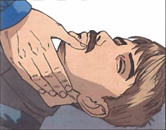

Билет №10
Вопрос 1. Требования охраны труда перед началом работ при обслуживании средств КИПиА. (ИОТВ-11-15, п.2.)
Ответ:
Надеть полагающуюся по нормам спецодежду и спецобувь в зависимости от характера работы и климатических условий.
Получить задание и инструктаж о мерах безопасности у руководителя работ (мастера).
Перед началом работы необходимо убедиться в исправности электрооборудования, электроизмерительных приборов, заземления, инструментов и приспособлений, КИПиА и защитных средств. В случае обнаружения неисправностей принять меры по их устранению.
Приступая к работе, слесарь КИПиА должен ознакомиться с записями в журнале «Отказов средств КИПиА» на объекте обслуживания.
При выполнении работ на электрооборудовании отключить напряжение питания данного оборудования и принять меры к недопущению его случайного включения, вывесить плакат «Не включать, работают люди».
При проведении газоопасных работ получить инструктаж и расписаться в журнале проведения газоопасных работ или в наряде допуске на газоопасные работы.
Вопрос 2. Вентиляция. Защита от запыленности. (ИОТВ-82-15, п.З.)
Ответ:
3.1. Пыль, образующаяся при ремонте и обслуживании агрегатов, обработке металла и дерева, заточке инструментов, проведении покрасочных работ и т.п., оказывает вредное воздействие на человека: поражает дыхательные пути, органы зрения, пищеварительный тракт. Токсические пыли, попадая в органы пищеварения даже в небольших количествах, вызывают отравления. Длительное воздействие пыли свинца, марганца приводит к острому отравлению организма.
3.2. Наиболее действенными мерами по борьбе с пылью являются механизация и герметизация процессов, устройство общеобменной приточно-вытяжной вентиляции.
3.3. Вентиляция в зависимости от своего назначения подразделяется на вытяжную и приточную. Вытяжная вентиляция удаляет из помещения запыленный воздух, приточная - подает чистый.
3.4. Вентиляция бывает естественной и искусственной.
3.4.1. Естественная вентиляция осуществляется через окна, неплотности, имеющиеся в конструкции зданий, материалов (благодаря пористости), а также через дефлекторы, установленные под крышами здания. Недостатком естественной вентиляции является невозможность организации очистки, подогрева или охлаждения поступающего воздуха, зимой при большом воздухообмене может нарушиться микроклимат помещения. Естественную вентиляцию предусматривают в помещениях для хранения запасных частей, инструмента.
3.4.2. При искусственной вентиляции загрязненный воздух из помещения удаляется осевыми или центробежными вентиляторами, приводимыми в действие электродвигателями. Во всех закрытых помещениях, где хранятся автомобили, работают двигатели и выделяются различные вредные вещества, должна быть принудительная приточно-вытяжная вентиляция.
3.5. Общеобменные вентиляционные системы создают воздухообмен во всем помещении. Местные вентиляционные системы удаляют вредные выделения от места их образования или подают свежий воздух в рабочую зону.
3.6. Наиболее совершенной вентиляцией является кондиционирование воздуха, при котором в помещениях автоматически поддерживаются заданные температура, влажность и чистота воздуха.
3.7. Для проветривания помещений в производственных зданиях независимо от наличия вредных выделений и вентиляционных устройств предусматриваются открывающиеся створки в окнах. Они должны обеспечивать направление поступающего воздуха вверх - в холодный период, и вниз - в теплый.
3.8. Помещения для проведения краскоприготовительных, окрасочных работ должны быть оборудованы отдельными системами приточно-вытяжной вентиляции с электроприводом, а при необходимости -дополнительно местными отсосами.
Вопрос 3. Чем должны быть укомплектованы все электроустановки?. (ИОТВ-135-14, п.2.4)
Ответ:
Все электроустановки должны быть укомплектованы первичными средствами пожаротушения.
Вопрос 4. Назовите первую помощь при переломах. (Инструкция для проведения обучения оказания первой помощи пострадавшим на производстве, п. 11.)
Ответ:
11. Правила оказания помощи в случаях переломов плечевой кости:
Внимание! Так как пострадавший не может самостоятельно удерживать поврежденную конечность, а малейшие движения причиняют сильнейшие страдания и боль, следует сначала зафиксировать поврежденную руку к груди.
Правило первое.
Прибинтовать руку к туловищу.
Правило второе.
Приложить к месту перелома холод.
11.1. Правила оказания помощи в случаях переломов костей предплечья:
Правило первое.
Наложить шину и зафиксировать руку косынкой.
Правило второе.
Приложить холод к месту перелома.
Если у пострадавшего перелом плечевой кости или костей предплечья сочетается с сильным кровотечением из раны на плече или предплечье?
Следует сначала наложить кровоостанавливающий жгут на плечо и только затем повязку на рану. После этого наложить шину на поврежденную конечность и зафиксировать руку косынкой.
11.2. Правила оказания помощи в случаях повреждения голеностопного сустава:
Правило первое.
Приложить к месту повреждения холод.
Правило второе.
Наложить шину.
Правило третье.
Нельзя ощупывать конечность с целью уточнения места перелома.
Правило четвертое.
Нельзя снимать с поврежденной ноги одежду и обувь.
Внимание! Прежде чем накладывать транспортную шину, необходимо сформировать ее по форме и размеру здоровой ноги.
Внимание! Очень важно, чтобы один участник осторожно, но как можно плотнее прижимал створки шины к конечности, а другой фиксировал ее завязками.
Внимание! Шину следует накладывать вдвоем. Первый участник фиксирует поврежденную ногу. Второй участник формирует шину и, удерживая ее, заводит под приподнятую конечность.
11.3. Правила оказания помощи при переломе бедренной кости, повреждении коленного сустава и костей голени:
Внимание! Когда из-за сильных болей в поврежденной ноге пострадавший не может встать или даже пошевелить ногой в положении лежа, следует заподозрить перелом бедренной кости, повреждение коленного сустава, перелом костей голени.
Правило первое.
Приложить к месту повреждения холод.
Правило второе.
Положить между ног валик из мягкой ткани.
Правило третье.
Наложить шину.
Если из раны в области перелома обильно вытекает кровь и видны отломки костей?
Сначала следует наложить жгут и только затем наложить повязку на рану и шину на конечность.
Внимание! Накладывать шины следует только в том случае, когда на место происшествия невозможно вызвать скорую помощь или спасательные службы.
Внимание! Если есть возможность вызвать спасательные службы, то поврежденную конечность необходимо зафиксировать в таком устойчивом положении, которое причиняет наименьшую боль.
Внимание! Сначала следует зафиксировать шины завязками на груди, затем на стопах.
11.4. Правила перекладывания пострадавшего способом «скрутка»:
Правило первое.
Минимальное количество участников — четверо.
Основная тяжесть при переносе пострадавшего распределена между вторым и третьим участниками.
Правило второе.
Данный способ нельзя использовать при переносе в положении «лежа на животе» и в случаях, когда на пострадавшем нет одежды из плотной ткани.
Правило третье.
Плотно скрутить прочную ткань одежды в валик на груди и животе. В один валик скрутить обе штанины брюк на бедрах и голенях.
Правило четвертое.
По команде участника, придерживающего голову, бережно перенести пострадавшего с земли на носилки.
11.4.1. Правила перекладывания пострадавшего способом «нидерландский мост»:
Правило первое.
Минимальное количество участников — трое. Основная тяжесть при переносе пострадавшего распределена между первым и вторым участниками.
Правило второе.
Первый участник захватывает пострадавшего под мышками, расположив его голову на своих предплечьях. Второй участник подкладывает руки под тазовую и поясничную области. Третий участник располагает на своих предплечьях голени и стопы.
Правило третье.
Перенос пострадавшего следует начинать по команде второго участника.
Внимание! Способ очень удобен при перекладывании пострадавшего в положении «лежа на животе».
11.5. Правила транспортировки пострадавшего вверх по лестнице или в горизонтальном направлении:
Правило первое.
Идущие впереди обязательно сообщают идущему сзади о всех препятствиях на своем пути (ступеньки, пороги, куски арматуры и пр.).
Правило второе.
Идущий сзади следит за состоянием пострадавшего и в случае необходимости подает команду к экстренной остановке.
11.5.1. Правила транспортировки пострадавшего вниз по лестнице:
Правило первое.
Идущие впереди обязательно сообщают идущему сзади о всех препятствиях на своем пути (ступеньки, пороги, куски арматуры и пр.).
Правило второе.
Идущий сзади следит за состоянием пострадавшего и в случае необходимости подает команду к экстренной остановке.
11.6. Правила оказания помощи в случаях повреждения костей таза и позвоночника:
Внимание! Если после падения с высоты или удара автомобилем пострадавший лежит в позе «лягушки»: ноги согнуты в коленях и стопы развернуты кнаружи — следует заподозрить повреждения костей таза, бедренных костей и позвоночника.
Правило первое.
Сначала следует подложить валик под колени.
Правило второе.
Приложить холод к животу.
Правило третье.
Нельзя прикладывать к животу грелки и предлагать обильное питье.
Внимание! Повреждения костей таза и позвоночника часто сопровождаются травмами внутренних органов и опасными внутренними кровотечениями. Использование холода значительно уменьшит скорость кровопотери, обезболит и облегчит состояние пострадавшего.
Внимание! Если в течение 40 минут не будет подложен валик под колени или пострадавший не будет зафиксирован в вакуумном матрасе, он неминуемо погибнет в первые трое суток от осложнений шока и жировой эмболии.
Внимание! При крайней необходимости транспортировать пострадавшего с повреждениями костей таза, позвоночника можно только на щите, с подложенным под колени валиком, или в вакуумном матрасе.
Если у пострадавшего в состоянии комы отмечается поза "лягушки" Немедленно повернуть пострадавшего на живот, так как смерть может наступить в любую минуту от попадания содержимого желудка в дыхательные пути.
11.6.1. Правила перекладывания пострадавшего с земли на вакуумный матрас с помощью ковшовых носилок:
Внимание! Так как пострадавший не должен находиться на ковшовых носилках более 2-3 минут, следует заранее подготовить и расстелить рядом вакуумный матрас или подкат машины скорой помощи.
Правило первое.
Разъединять ковши носилок лучше на земле, в одной горизонтальной плоскости.
Правило второе.
Для предотвращения травмирования участников оказания помощи избегать проноса ковшей над головой помощника.
Внимание! Если процесс перекладывания на вакуумный матрас занимает не более 3 минут, то можно не подкладывать валик под колени.
Внимание! При угрозе повторной остановки сердца следует постоянно контролировать пульс на сонной артерии. Реанимацию можно проводить на ковшовых носилках и в вакуумном матрасе.
11.6.2. Правила иммобилизации пострадавшего в вакуумном матрасе
Первый участник.
Фиксирует шейный отдел позвоночника и контролирует состояние пострадавшего (пульс на сонной артерии).
Второй участник.
Формирует позу «лягушки», подложив под матрас свою стопу или валик, затягивает ремни матраса.
Третий участник.
Откачивает «обратным насосом» воздух из матраса и формирует валик для опоры стоп.
Если нет вакуумного матраса? Транспортировать пострадавшего на щите с подложенным под колени валиком из одежды.
11.6.3. Правила транспортировки в вакуумном матрасе:
Внимание! Использование вакуумного матраса позволяет перевозить пострадавших с тяжелыми травмами по бездорожью в любых погодных условиях. В матрасе пострадавшего можно поворачивать на бок при переносе по узкому лазу или в случаях угрозы рвоты, извлекать из колодца или расщелины в вертикальном положении.
Внимание! Пострадавших, зафиксированных в вакуумном матрасе, переносить на длительные расстояния лучше на ковшовых носилках.
Вопрос 5. Дайте определение: электроустановка действующая. (ИОТВ-86-13, п. 1.6.)
Ответ:
1.6. Действующими называются электроустановки, которые находятся под напряжением полностью или частично или на которые в любой момент может быть подано напряжение включением коммутационной аппаратуры, а также установки, содержащие в себе источники электроэнергии (химические, гальванические и полупроводниковые элементы).
Вопрос 6. В каких случаях пострадавшему проводятся реанимационные мероприятия и как они выполняются (с отработкой практических навыков на тренажере). (Инструкция для проведения обучения оказания первой помощи пострадавшим на производстве, п. 4.2.-5.9.)
Ответ:
4.2 Последовательность действий при оказании первой медицинской помощи:
Такая очередность действий позволит сохранить жизнь пострадавшего до прибытия медицинских работников |
1. |
Нет сознания и нет пульса на сонной артерии (клиническая смерть) |
 |
Приступить к реанимации (см. п.5) |
2. |
Нет сознания, но есть пульс на сонной артерии (обморок или начало развития комы) |
 |
Попытаться привести пострадавшего в сознание (см. п.6)
Если в течени 3-4 минут это не удалось, обязательно повернуть его на живот (см. п.7) |
3. |
Обильное кровотечение |

|
Быстро пережать конечность выше раны и наложить жгут (см. п.9) |
4. |
Наличие раны |

|
Наложить стерильные повязки (см. п.10.3) |
5. |
Признаки перелома конечностей |

|
Наложить транспортную шину (см. п.11) |
5. Правила определения признаков клинической смерти:
Правило первое.
Чтобы сделать вывод о наступлении клинической смерти у неподвижно лежащего пострадавшего, достаточно убедиться в отсутствии сознания и пульса на сонной артерии.
Правило второе.
Не следует терять время на определение сознания путем ожидания ответов на вопросы: «Все ли у тебя в порядке? Можно ли приступить к оказанию помощи?». Надавливание на шею в области сонной артерии является сильным болевым раздражителем.
Правило третье.
Не следует терять время на определение признаков дыхания. Они трудноуловимы, и на их определение с помощью ворсинок ватки, зеркальца или наблюдения за движением грудной клетки можно потерять неоправданно много времени. Самостоятельное дыхание без пульса на сонной артерии продолжается не более минуты, а вдох искусственного дыхания взрослому человеку ни при каких обстоятельствах не может причинить вреда.
Если подтвердились признаки клинической смерти? Быстро освободить грудную клетку от одежды приступить к сердечно-легочной реанимации см. пп.5.5; 5.6.

5.1. Правила определения пульса на сонной артерии:
Правило первое.
Расположить четыре пальца на шее пострадавшего (см. п.5.4) и убедиться в отсутствии пульса на сонной артерии.
Правило второе.
Определять пульс следует не менее 10 секунд.
5.2. Правила освобождения грудной клетки от одежды для проведения реанимации:
Правило первое.
Расстегнуть пуговицы рубашки и освободить грудную клетку.
Правило второе.
Джемпер, свитер или водолазку приподнять и сдвинуть к шее.
Правило третье.
Майку, футболку или любое нательное белье из тонкой ткани можно не снимать. Но прежде чем наносить удар по грудине или приступать к непрямому массажу сердца, следует убедиться, что под тканью нет нательного крестика или кулона.
Правило четвертое.
Поясной ремень обязательно расстегнуть или ослабить. Известны случаи, когда во время проведения непрямого массажа сердца печень повреждалась о край жесткого ремня.

Внимание! Перед тем как приступить к реанимации, необходимо уложить пострадавшего на жесткую и ровную поверхность, освободить грудную клетку от одежды и определить анатомические ориентиры (см. п. 5.4).
5.3. Правила освобождения грудной клетки от одежды для проведения реанимации, в случаях, когда на женщине надет бюстгальтер - его надо сдвинуть ближе к шее.
5.4. Анатомические ориентиры, необходимые для проведения сердечно-легочной реанимации:

5.5. Правила проведения непрямого массажа сердца и безвентиляционной реанимации:
Правило первое.
Расположить основание правой ладони выше мечевидного отростка так, чтобы большой палец был направлен на подбородок или живот пострадавшего. Левую ладонь расположить на ладони правой руки.
Правило второе.
Переместить центр тяжести на грудину пострадавшего и проводить непрямой массаж сердца прямыми руками.
Правило третье.
Продавливать грудную клетку не менее чем на 3-5 см с частотой не реже 60 раз в минуту.
Правило четвертое.
Каждое следующее надавливание начинать только после того, как грудная клетка вернется в исходное положение.
Правило пятое.
Оптимальное соотношение надавливаний на грудную клетку и вдохов искусственной вентиляции легких - 30:2, независимо от количества участников реанимации.
Правило шестое.
По возможности приложить холод к голове.
 Внимание! При каждом надавливании на грудную клетку происходит активный выдох, а при ее возвращении в исходное положение — пассивный вдох. Когда выделения
изо рта пострадавшего представляют угрозу для здоровья спасающего, можно ограничиться проведением непрямого массажа сердца, т.е. безвентиляционным вариантом реанимации.
Внимание! При каждом надавливании на грудную клетку происходит активный выдох, а при ее возвращении в исходное положение — пассивный вдох. Когда выделения
изо рта пострадавшего представляют угрозу для здоровья спасающего, можно ограничиться проведением непрямого массажа сердца, т.е. безвентиляционным вариантом реанимации.
Внимание! Чтобы непрямой массаж сердца был эффективным, его необходимо проводить на ровной жесткой поверхности.
Если под ладонью появился неприятный хруст (признак перелома ребер)? Уменьшить не глубину и силу, а ритм надавливаний и ни в коем случае не прекращать непрямой массаж сердца.
5.6. Правила проведения вдоха искусственной вентиляции легких (далее - ИВЛ) способом «изо рта в рот»:
Правило первое.
Правой рукой обхватить подбородок так, чтобы пальцы, расположенные на нижней челюсти и щеках пострадавшего, смогли разжать и раздвинуть его губы.
Правило второе.
Левой рукой зажать нос.
Правило третье.
Запрокинуть голову пострадавшего и удерживать ее в таком положении до окончания проведения вдоха.
Правило четвертое.
Плотно прижаться губами к губам пострадавшего и сделать в него максимальный выдох. Если во время проведения вдоха ИВЛ пальцы правой руки почувствуют раздувание щек, можно сделать безошибочный вывод о неэффективности попытки вдоха.
Правило пятое.
Если первая попытка вдоха ИВЛ оказалась неудачной, следует увеличить угол запрокидывания головы и сделать повторную попытку.
Правило шестое.
Если вторая попытка вдоха ИВЛ оказалась неудачной, то необходимо сделать 30 надавливаний на грудину, повернуть пострадавшего на живот, очистить пальцами ротовую полость и только затем сделать вдох ИВЛ.

Внимание! Нет необходимости разжимать челюсти пострадавшего, так как зубы не препятствуют прохождению воздуха. Достаточно разжать только губы.
Если невозможно преодолеть чувство брезгливости или выделения изо рта пострадавшего представляют угрозу для здоровья спасателя? Следует использовать специальную пластиковую маску для проведения ИВЛ способом «изо рта в рот».
5.6.1. Правила использования защитной маски для безопасного проведения ИВЛ:
Внимание! Когда контакт с выделениями из ротовой полости пострадавшего представляет угрозу инфицирования, отравления ядовитыми газами, искусственное дыхание можно проводить только через специальную защитную маску.
Правило первое.
Правильно взять маску в правую руку. Захватить ее пальцами правой руки так, чтобы большая часть ладони осталась свободной.
Правило второе.
Свободной частью ладони обхватить подбородок. Придерживая пальцами маску на лице, запрокинуть голову пострадавшего.
Правило третье.
Левой рукой прижать маску к лицу.
Правило четвертое.
Прижаться губами к отверстию с защитным клапаном и сделать в него выдох.
 Когда проведение ИВЛ «изо рта в рот» представляет угрозу для здоровья спасателя, а защитной маски нет? Проводить непрямой массаж сердца - безвентиляционную реанимацию (см. п.5.5) - до прибытия медицинского персонала или появления защитной маски.
Когда проведение ИВЛ «изо рта в рот» представляет угрозу для здоровья спасателя, а защитной маски нет? Проводить непрямой массаж сердца - безвентиляционную реанимацию (см. п.5.5) - до прибытия медицинского персонала или появления защитной маски.
5.7. Правила проведения реанимации более 10-15 минут:
Внимание! Мужчина со средними физическими данными может проводить комплекс сердечно-легочной реанимации не более 3-4 минут. Вдвоем с помощником - не более 10 минут. Втроем — с лицами любого пола, возраста и физических данных - более часа.
Правило первое.
Первый участник делает вдох искусственного дыхания. Контролирует реакцию зрачков и пульс на сонной артерии и информирует партнеров о состоянии пострадавшего: «Есть реакция зрачков!» или «Есть пульс!» и т.п.
Правило второе.
Второй участник проводит непрямой массаж сердца и отдает команду: «Вдох!». Контролирует эффективность вдоха искусственного дыхания по подъему грудной клетки и констатирует: «Вдох прошел!» или «Нет вдоха!».
Правило третье.
Третий участник приподнимает ноги пострадавшего для улучшения притока крови к сердцу. Восстанавливает силы и готовится сменить второго участника. Координирует действия.
Правило четвертое.
Через каждые 2-3 минуты реанимации обязательно производится смена участников и проверяется наличие самостоятельного пульса.
Правило пятое.
По возможности приложить холод к голове пострадавшего.
 5.8. Правила расположения участников реанимации:
5.8. Правила расположения участников реанимации:
Внимание! Такое расположение участников позволяет:
избегать столкновений головами;
рационально использовать силы (физически слабого участника следует чаще располагать в ногах пострадавшего, но при этом он должен координировать действия всей команды);
привлечь к реанимации любого необученного человека.

Сначала новичку следует доверить поддерживание ног, а затем задействовать в проведении реанимации.
5.9. Правила проведения реанимации в ограниченном пространстве:
Правило первое.
Комплекс реанимации можно проводить только в положении пострадавшего лежа на спине, на ровной жесткой поверхности.
Правило второе.
Обеспечить возможность запрокидывания головы пострадавшего для проведения ИВЛ.
Вопрос 7. Техническое обслуживание теплообменников "труба в трубе" ТТРМ УППНиПБ. Периодичность, типовые операции, регламентирующие документы, оформление документации. (Положение о техническом обслуживании и текущем ремонте средств автоматизации и телемеханизации, контрольно-измерительных приборов, СТО 36-2007, ПИ-456-15).
Ответ:
Вопрос 8. Проверка средств сигнализации, противоаварийных защит и блокировок на узлах водоподготовки с артезианскими скважинами, канализационных очистных станциях. Периодичность, типовые операции, регламентирующие документы, оформление документации. (Положение о техническом обслуживании и текущем ремонте средств автоматизации телемеханизации, контрольно-измерительных приборов, СТО-36-2007, ПИ-99-13).
Ответ:
Предыдущий билет
Вернуться в раздел
Следующий билет